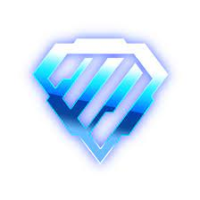

Infos générales :
Rocket League est un jeu vidéo de sport développé et édité par Psyonix. Il sort en juillet 2015 sur Windows et sur PlayStation 4, en février 2016 sur Xbox One, en septembre 2016 sur Linux et Mac et en novembre 2017 sur Nintendo Switch.
Système de classement:
Quand vous entrez dans une première playlist compétitive sur Rocket League, vous commencerez par jouer une série de matchs de placement où vous n’aurez pas encore de rang. Le nombre de matchs de placement à faire peut varier, mais s’arrêteront à 10 en tout. Les joueurs avancés pourraient avoir besoin de jouer seulement 10 ou 20 parties en ranked, alors que des joueurs plus nouveaux pourraient avoir besoin de plus de temps pour trouver leur classement. Les joueurs qui veulent faire des parties compétitives devront gagner leurs 10 matchs de placement de façon séparée pour chaque playlist. Une fois placé dans un certain rang, vous serez aussi placés dans une division à l’intérieur de ce rang. Chaque rang comprend 4 divisions qui doivent être passées pour arriver au rang supérieur. Il faudra gagner 2 ou 3 parties d’affilée pour monter de division. Une fois qu’assez de parties seront remportées dans la division 4 du rang, vous serez promus dans la division supérieure. Les joueurs peuvent gagner des récompenses de saison en fonction du rang atteint. Ces récompenses de saison ne sont pas purement basées sur le rang dans lequel vous aurez terminé la saison : il faudra gagner 10 parties dans chaque rang successif pour obtenir les récompenses de saison. Pour les parties qui comptent pour des récompenses d’un niveau spécifique, il faudra gagner des matchs qui sont classés dans ce rang ou au-dessus. Les joueurs qui sont dans la division grand master, par exemple, doivent remporter 10 matchs pour obtenir leurs récompenses bronze, puis silver, puis gold… jusqu’aux récompenses de grand champion. Au lancement de chaque saison, les joueurs devront jouer 10 parties de placement supplémentaires pour déterminer leur rang initial du lancement de la nouvelle saison. Votre MMR ne reset pas totalement entre les saisons, mais il existe un soft reset au lancement de chaque saison pour offrir un peu d’espace pour descendre ou monter à l’envi. Les joueurs pourront aussi se voir demander de jouer des parties de placement supplémentaires pendant une saison s’ils prennent une longue pause du jeu. C’est un aspect nécessaire de tout système de classées, puisque les joueurs qui reviennent sur le jeu pourraient être un peu rouillés et pas prêts à jouer au même niveau qu’ils le pouvaient précédemment quand ils avaient commencé leur pause.
MMR:
Le MMR, ou match making rating, est une valeur cachée qui détermine le niveau des adversaires contre et avec qui vous allez jouer. Notez que votre MMR ne décrit pas forcément votre niveau de compétences, mais c’est un nombre algorithmique dérivé basé sur votre taux de victoire et de performance pour vous insérer dans la zone générale de difficulté. Quand vous jouez des parties et que vous les gagnez ou les perdez, l’algorithme du jeu ajustera votre MMR. Dans les modes compétitifs, votre MMR sera en général reflètera directement votre rang de joueur, avec une certaine zone de MMR constituant chaque rang. La seule exception à cette règle est avec les joueurs Super Sonic Legend, qui ont un minimum à atteindre pour garder ce titre, mais il n’y a pas de limite maximale au système de MMR. Il y a donc une vaste disparité entre les Super Sonic Legend aux rangs les plus bas et les meilleurs joueurs du jeu qui sont parvenus à grimper encore plus haut dans le système MMR en remportant des parties, et ce même quand le rang atteint est maximal. Les modes de jeu rapides ont leur propre système MMR à part, mais il n’y a pas de moyens de voir quel rang de quickplay est obtenu par défaut. Il est néanmoins possible de télécharger et d’installer Alpha Console, qui est un mod Rocket League qui montrera à la fois votre MMR caché et celui des autres, à la fois en quickplay et dans les modes de jeu compétitifs. Bien que le mod originel Alpha Console a été démantelé en mars 2020, il est toujours possible de l’ajouter au jeu comme plugin via BakkesMod, un mod populaire sur Rocket League qui apporte une tonne de fonctionnalités uniques au jeu.

Bronze:

Conseils: -Ne pas se poser de questions
-Se faire plaisir
-Aller en freeplay
Astuces:
Argent:
Conseils: -Travailler les frappes
-Travailler la maîtrise du véhicule
Astuces:
Or:
Conseils: -Accéder au workshop
-Travailler les dribbles et les aériennes
Astuces:
Platine:
Conseils: -Travailler sa rotation
-Améliorer ses mécaniques (frappes,contrôles,passes)
Astuces:
Diamant:
Conseils: -Prendre son temps
-Profiter des erreurs des adversaires
-Jouer sur les murs
Astuces:
Champion:

Conseils: -Maîtriser les rotations
-Maîtriser le jeu au mur
-Analyser le terrain
Astuces:
Grand champion:

Conseils: -Optimiser chaque mécanique
-Apprendre des mécaniques avancées
Astuces:
Supersonic legend:

Conseils:
Astuces: